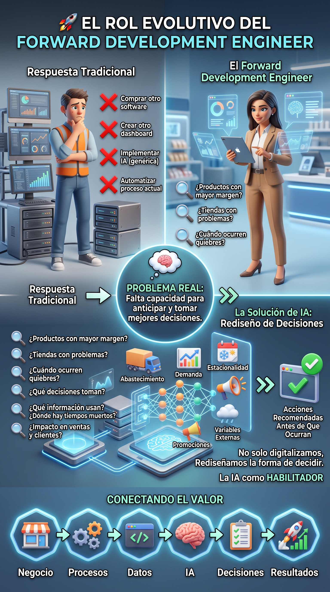
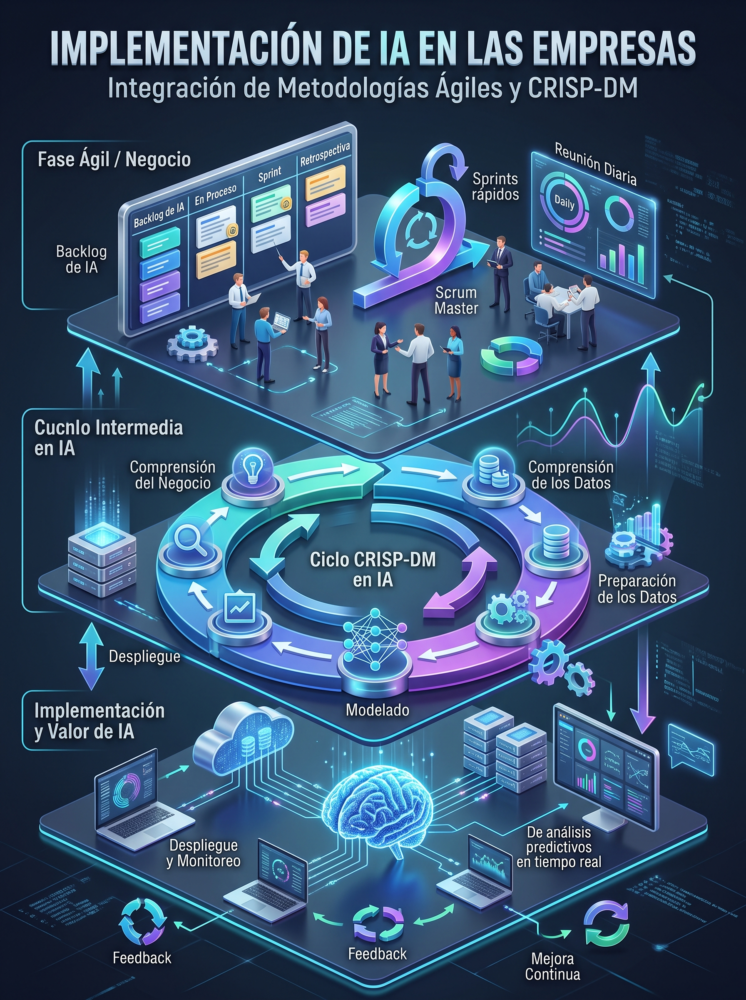

DNA to
Intelligence
Del conocimiento en tu ADN, a la inteligencia que transforma realidades.
"Transformo problemas complejos de negocio en sistemas de inteligencia artificial que funcionan en el mundo real." Diseño arquitecturas de IA, despliego agentes inteligentes y rediseño procesos y roles empresariales.
Arquitecto de soluciones de IA, especialista en agentes autónomos, rediseño de procesos y computación espacial.
Información
→ Energía
Los datos se conectan, se procesan y se transforman en energía. La información fluye, se expande y crea nuevas posibilidades.
"No se trata de incorporar IA a procesos antiguos. Se trata de rediseñar cómo trabaja la organización."
La neurona
→ Aprendizaje
La energía llega a la neurona, se activa la red y surge la inteligencia aumentada: personas, tecnología y procesos trabajando en armonía.
"El verdadero potencial de la IA no está únicamente en procesar información. Está en transformar cómo pensamos, decidimos y creamos."
Tecnología, personas y propósito.
Creo en una IA que amplía lo humano, en equipos que piensan diferente y en soluciones que generan un impacto real y sostenible.
Transformación Digital
IA + XR + Metodologías Ágiles
Cloud + IA (Minciencias)
& 8 Impuestos SIGIG-MIAC
Plataformas en producción
+ 8 Células IA Olímpica S.A.
Formados en SENA Virtual,
CCB & Academia Edentia
4x #1 Lugar Nacional
+ Autor FILBo 2025 (17+ Libros)

El Método Forward Deployed Engineer
Cinco etapas disciplinadas de ingeniería en terreno combinadas con 8 marcos estratégicos para llevar sistemas multiagente del problema ambiguo a producción auditada.
Comprender el problema real del negocio
Inmersión directa en la operación del cliente para diagnosticar cuellos de botella, fricciones y objetivos del C-Level.
Identificar procesos, datos y oportunidades
Mapeo de fuentes de datos, pasarelas, políticas de soberanía (Ley 1581) y tareas de alto retorno (ROI).
Diseñar la arquitectura y los agentes de IA
Modelado con Spec-Driven Development (SDD), contratos MCP, flujos RAG y selección de LLMs en nube o locales.
Integrar, validar y desplegar las soluciones
Bancos de pruebas deterministas (Harness Engineering), integración con sistemas core y despliegue seguro.
Medir resultados, adopción y evolución
Acompañamiento en Roles Aumentados, telemetría de impacto operativo y auditoría continua ISO/IEC 42001.
Forward Deployed Engineering (FDE) + Capas de IA
Inmersión directa en la operación real del cliente. En lugar de entregar prototipos aislados en un laboratorio, diseño y despliego sistemas multiagente conectados directamente a las bases de datos, pasarelas y flujos de trabajo existentes, garantizando adopción ejecutiva mediante Roles Aumentados.
Soberanía de Datos y Cómputo
Cada agente y pipeline RAG se concibe bajo aislamiento de datos y modelos locales para proteger el activo informativo de la organización:
Gestión de IA responsable, auditable y protección estricta de datos personales.
Ollama y GPUs Nvidia para inferencia privada sin exponer datos sensibles.
Capas de Arquitectura en Producción
Siete planos arquitectónicos integrados que conectan desde la infraestructura de datos e inferencia local/nube hasta agentes autónomos y experiencias espaciales XR.
Enjambres coordinados con especialización de roles, memoria compartida y delegación supervisada.
Indexación semántica, grafos de conocimiento y recuperación híbrida libre de alucinaciones.
Model Context Protocol (MCP), Function Calling determinista y automatización con n8n.
Data Lakehouse, Kafka, Spark MLlib/Streaming, Hadoop, BigQuery, ETL/ELT, SQL, AWS y GCP.
Balanceo entre LLMs en la nube (Google AI Platform) e inferencia privada On-Premise (Ollama, Nvidia).
Cumplimiento de Ley 1581 e ISO 42001, políticas de acceso granular y bancos de pruebas Harness.
Jetpack Compose for XR, Material Design 3 XR, Unity & Unreal Engine, Blender 3D, accesibilidad WCAG AAA, Ley de Fitts espacial, Voz Afectiva Zero-UI y Gemelos Digitales IoT.
"No se trata de incorporar IA a procesos antiguos. Se trata de rediseñar cómo trabaja la organización."
Transformamos flujos secuenciales fragmentados en arquitecturas operativas donde las personas, los agentes autónomos y los sistemas core colaboran en tiempo real.
23 Productos & Sistemas Desplegados
Plataformas en la nube, sistemas multiagente en producción, simuladores estratégicos y aplicaciones interactivas desarrolladas por Leonardo Ordoñez Lozano.
SIGIG - MIAC: Inteligencia Tributaria Cundinamarca
Sistema Inteligente de Gestión de Ingresos de Cundinamarca — Módulo de Inteligencia Artificial para Contribuyentes. Orquestación multiagente con LangChain y arquitectura Data Lakehouse que optimiza el recaudo y fiscalización de 8 impuestos departamentales bajo estricto cumplimiento de Ley 1581 e ISO 42001.
Madura.IA: Diagnóstico de Madurez Organizacional en IA
Herramienta interactiva de diagnóstico integral de madurez en Inteligencia Artificial para corporaciones y entidades públicas. Evalúa 5 dimensiones clave (Estrategia, Datos, Infraestructura, Talento Humano y Gobernanza), determinando el nivel de madurez (1 a 5) y generando un roadmap con brechas operativas y recomendaciones ejecutivas.
AntiCoomeva AI: Ecosistema Financiero & Voz Afectiva
Solución de banca conversacional y gestión financiera con agentes de voz afectivos Zero-UI y telemetría no intrusiva diseñada para Coomeva y adaptada a la Economía Plateada. Galardonada con el 1er Lugar en el Reto Nacional Coomeva 2026 por su accesibilidad y experiencia de usuario.
OFRE Retail: Optimización de Surtido y Precios
Plataforma de orquestación de agentes y analítica para retail masivo. Implementada para Vivetori y orientada a la operación de grandes cadenas comerciales (Olímpica S.A.). Automatiza diagnósticos de surtido, análisis de demanda y trazabilidad mediante Spec-Driven Development (SDD) y arneses de prueba deterministas.
AgentOS 02: Centro de Comando Multiagente & MCP
Sistema operativo y panel de control en tiempo real para flotas de agentes de IA autónomos. Implementa arquitectura distribuida con soporte completo para el protocolo MCP (Model Context Protocol), enrutamiento semántico RAG, observabilidad de llamadas a funciones y balanceo de carga entre modelos locales y en la nube.
Simulador de Adopción IA BICE (Banca e Inversión)
Plataforma de simulación estocástica y financiera para proyectar el retorno de inversión (ROI), el ahorro de horas operativas y la curva de absorción al desplegar agentes autónomos y roles aumentados en entidades bancarias, comerciales y corporativas.
Sistema de Investigación Científica IA Edentia
Plataforma de síntesis de literatura científica y minería de conocimiento automatizada. Conecta repositorios académicos abiertos, extrae patrones de investigación, correlaciona variables biomédicas y de ciencia de datos, y acelera la formulación de hipótesis para proyectos de I+D.
McKinsey + Edentia: Estimador de Valor en IA
Calculadora ejecutiva de captura de valor basada en los marcos analíticos globales de McKinsey & Company adaptados al tejido empresarial latinoamericano. Cuantifica ganancias de productividad por dominios funcionales (Ventas, Operaciones, TI, Jurídico y Servicio al Cliente).
DTI Pereira & Risaralda: Turismo Inteligente
Plataforma de gobernanza de Destino Turístico Inteligente (DTI) para la Secretaría de Turismo de Pereira y Risaralda. Integra agentes de orientación turística multimodal, tableros de afluencia, recomendadores de rutas patrimoniales y monitoreo de sostenibilidad económica y ambiental.
Academia Virtual Edentia: Campus Tecnológico
Entorno virtual de aprendizaje de vanguardia para la capacitación de ejecutivos, ingenieros y equipos multidisciplinarios en IA aplicada, computación espacial XR, metodologías FDE y gestión de la innovación. Integra rutas de aprendizaje dinámicas y seguimiento de competencias.
Plataforma de Diseño Empresarial con IA
Suite de arquitectura organizacional asistida por agentes. Modela propuestas de valor, lienzo Canvas dinámico, flujos de clientes y redefinición de perfiles laborales hacia roles aumentados mediante inteligencia artificial y principios de diseño ágil.
Biblioteca Digital & Catálogo Oficial de Obras
Portal editorial oficial de Leonardo Ordoñez Lozano que recopila sus 17+ libros: la saga Neurohack Revolution (10 tomos de negocios e IA), la saga Cuentos Cuánticos (6 tomos presentados en FILBo 2025) y la obra SmartCities sobre futuros urbanos posibles.
FDE Studio Progressive Web App
Estudio interactivo de Forward Deployed Engineering concebido para modelar especificaciones funcionales (SDD), simular interacción con contratos MCP y orquestar flujos de agentes conectados a la infraestructura del cliente.
AI Design Sprint FDE Enterprise Suite PWA
Suite completa de trabajo guiado para ejecutar sprints de diseño de agentes de IA en 5 etapas intensivas: alineación del problema de negocio, mapeo de datos, arquitectura de agentes, harness testing y plan de paso a producción.
Acemoglu AI Economics Strategy PWA
Simulador analítico basado en las investigaciones económicas del Premio Nobel Daron Acemoglu sobre automatización versus aumentación laboral. Permite medir el impacto de la IA en la creación de nuevas tareas cognitivas complejas.
Metodología Silver IA: Ecosistema para Longevidad
Marco metodológico integral para la concepción y despliegue de sistemas de IA centrados en personas mayores: salud predictiva, autonomía residencial, combate a la soledad no deseada y finanzas seguras con interfaces intuitivas.
Silver Economy AI Advisory Ecosystem
Herramienta de consultoría estratégica y diagnóstico de oportunidades de mercado en la Economía Plateada. Diseña propuestas de valor para gobiernos, fondos de pensiones, cajas de compensación y empresas prestadoras de salud.
Silver Economy IA Interactive Report
Reporte interactivo enriquecido con datos demográficos globales y latinoamericanos, proyecciones de gasto del consumidor plateado y casos de éxito de IA en telecuidado y preservación de memoria.
SilverXR Community Blueprint
Plano maestro y arquitectura técnica para la creación de espacios comunitarios inmersivos en XR adaptados a la tercera edad. Integra estimulación cognitiva, ergonomía espacial y reducción de barreras de movilidad física.
XR y Nueva Longevidad: Interfaces Inmersivas
Investigación aplicada sobre interacción persona-computador (HCI) en cascos de realidad mixta para usuarios mayores: aplicación rigurosa de la Ley de Fitts, contraste visual ampliado y microinteracciones por mirada y voz.

Metodologías de Adopción e Industrialización de IA
Manual y aplicativo interactivo que guía la transición de pruebas de concepto (PoC) a sistemas industriales estables bajo metodologías ágiles, CRISP-DM, marcos IBM y evaluación de calidad con arneses automatizados.
Infografía: Marco Metodológico de IA Corporativa
Tablero infográfico interactivo de alta resolución que sintetiza las capas de arquitectura, roles involucrados, ciclos de retroalimentación y salvaguardas de gobernanza en la adopción corporativa de IA.
Infografía Ejecutiva: Transición de IA en América Latina
Análisis visual comparativo sobre la adopción de inteligencia artificial en América Latina: retos de soberanía tecnológica, brecha de habilidades, infraestructura de cómputo y hojas de ruta para el desarrollo regional.
Trayectoria y Despliegues FDE
Consultor Senior en IA & Mentor Técnico de Proyectos — Vivetori (Implementación para Olímpica S.A. - Retail)
- Automatización inteligente y orquestación de agentes con
n8nyLangChainintegrados a sistemas core del cliente. - Plataforma de trazabilidad ejecutiva a medida para transformación digital, gestión de bolsa de horas, bitácora de sesiones y diagnósticos con Harness Engineering y Spec-Driven Development (SDD).
- Acompañamiento y Mentoría Técnica Transversal (Programa Olímpica 80 Horas - Proyecto IA): Co-liderazgo y soporte técnico directo a los equipos de ingeniería y negocio de Olímpica S.A. (en articulación con Liderazgo Cliente Heidy Rivera y Mentor Líder Julián Castaño), estructurando la arquitectura y paso a producción de 8 proyectos estratégicos de IA:
1. Agendamiento CEDI
Optimización y automatización inteligente de turnos, muelles y recepción logística en Centros de Distribución (CEDI).
2. Agente Turno BI
Agente conversacional de Business Intelligence para consulta analítica de indicadores y soporte de turnos operativos.
3. GovTI 360
Plataforma integral de Gobernanza de TI 360° asistida por agentes para control normativo, trazabilidad y gestión tecnológica.
4. Extracción de Hallazgos
Automatización inteligente de lectura documental, minería de texto y estructuración de hallazgos de control y auditoría.
5. «Ofertas Inteligentes»
Plataforma integral de gestión de ofertas comerciales asistida por IA para segmentación, pricing y efectividad promocional.
6. Insights & Predicción de Incidentes
Plataforma analítica de detección temprana de anomalías, generación de insights y predicción de incidentes operativos.
7. Automatización Flujos de Correo
Clasificación semántica con LLMs, triaje automático, extracción de adjuntos y enrutamiento inteligente de correos corporativos.
8. Asistente de Conocimiento
Asistente inteligente basado en RAG sobre manuales y tickets históricos para acelerar la resolución en mesas de soporte.
Docente Experto & Formador en IA Industrial — Cámara de Comercio de Bogotá (Clúster de Impresión y de Empaques)
Estructuración, construcción curricular, evaluación diagnóstica y docencia magistral del programa «Inteligencia Artificial para Diseño, Producción y Comercialización de Impresos y Empaques» (20 horas en modalidad híbrida: 17.5h virtuales + Taller Integrador presencial en Sede Chapinero CCB Bogotá), dirigido a empresas manufactureras y afiliados de los clústeres industriales de la CCB (vía Acaplusco S.A.S.).
Fundamentos de IA en Impresión y Empaques
Evolución de IA en manufactura, IA Generativa vs. Analítica, Ingeniería de Prompts industrial y automatización de tareas repetitivas.
IA para Costos y Cotizaciones (<10 min)
Estructuras de costos (materiales, procesos, indirectos, márgenes), validación frente al mercado y cotizaciones automáticas con IA en menos de 10 minutos.
Planeación de Producción y Procesos
Programación de planta, balanceo de cargas, detección de cuellos de botella, simulación de escenarios y predicción de retrasos.
Compras, Inventarios y Materiales
Pronóstico de consumo, reposición inteligente, selección de proveedores, análisis ABC con IA, control de desperdicios y alertas.
IA para Calidad y Mejora Continua
Análisis de causas raíz, acciones correctivas automáticas, inspección visual asistida por IA, auditorías inteligentes y gestión documental.
Diseño de Empaques y Nuevos Productos
Diseño conceptual, generación de propuestas de empaque, investigación de tendencias, benchmarking, fichas técnicas y revisión normativa.
Taller Integrador End-to-End (12 Pasos)
Automatización completa desde la solicitud del cliente hasta el costeo de materia prima/mano de obra, cotización, propuesta y presentación ejecutiva.
IA para Ventas, Licitaciones y CRM
Propuestas técnicas y económicas, preparación de reuniones, IA para responder licitaciones, análisis de competidores y CRM asistido por IA.
Fundador y Líder en IA, Nueva Longevidad (Economía Plateada) — Edentia
- Arquitecturas de IA de interfaz cero (Zero-UI) con sensórica ambiental, Edge-AI y agentes conversacionales afectivos para monitoreo no intrusivo de adultos mayores.
- Consultoría AgeTech en salud preventiva, autonomía residencial, finanzas/ciberseguridad y conexión social.
- UX accesible con heurísticas validadas en XR (WCAG AAA, Ley de Fitts).
Consultor Senior Adopción de IA — Ingenium (Gobernación de Cundinamarca)
- Diseño y despliegue de SIGIG - MIAC, sistema multiagente con
LangChainy arquitectura Data Lakehouse que optimiza 8 impuestos en la Secretaría de Hacienda. - Integración segura mediante Function Calling y observabilidad total bajo Ley 1581 e ISO 42001.
- Liderazgo de 5 proyectos de IA y XR para los sectores médico e industrial.
Asesor en Inteligencia Artificial — Minciencias Colombia
- Migración de sistemas heredados a la nube (+30% en eficiencia operativa).
- Modelos de IA internos para análisis y seguimiento predictivo de convocatorias y contratos.
- Sistema de seguimiento 360° institucional (Infinity).
Project Manager AI — Edentia
Gemelos digitales del bosque y tokenización de activos forestales/agrícolas con sensores IoT, bases de datos e IA generativa (dendroenergía).
Visual Analytics y Big Data IA — Universidad del Atlántico
Captura en tiempo real con Kafka, procesamiento distribuido (Hadoop, Spark MLlib/Streaming) y modelos predictivos en Python.
Líder de Virtualización — SENA Virtual
Desarrollo de oficina virtual institucional y +70 cursos virtuales con un impacto histórico de más de 3.200.000 personas formadas en todo el país.
Reconocimientos y Premios de Primer Lugar
Reto CaribeTech
Aplicaciones con IA para Fintech. Motores de inferencia contextual para scoring y transaccionalidad.
Reto Coomeva
Soluciones con voz para Fintech y Nueva Longevidad (Economía Plateada) con agentes afectivos Zero-UI.
Autor Publicado en FILBo 2025
Reconocimiento oficial en la Feria Internacional del Libro de Bogotá por la saga literaria Cuentos Cuánticos.
Reto 4.0
Estrategias tecnológicas IoT y marketing para optimización comercial y telemetría de activos.
Formación 360
Soluciones integrales para líderes sociales a nivel nacional: ecosistemas de aprendizaje y articulación comunitaria con alta tecnología.
Universo Literario & Obra Editorial
NEUROHACK REVOLUTION
"No es solo otro conjunto de 10 libros de negocios, es un sistema operativo para tu mente emprendedora en la era de la inteligencia artificial."
SAGA DE CUENTOS CUÁNTICOS
"La saga literaria que está redefiniendo la manera en que las nuevas generaciones comprenden su papel en el mundo."
SMARTCITIES
"Una completa saga de experiencias cuánticas para una profunda reflexión sobre nuestros futuros urbanos posibles."
Ingeniero Informático
Fundación Universitaria Católica del Norte
Inteligencia Artificial
Microsoft Learn
Ciencia de Datos
Platzi / MinTIC Colombia
Telecomunicaciones
SENA